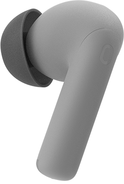
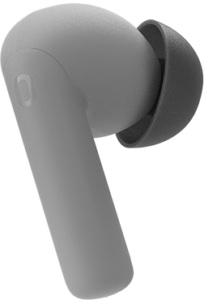

耳机
OriG in
已连接
SPP
固件 1.0.8
修改后自动保存


设备电量
OriG in
左耳
96%
右耳
100%
充电盒
100%
查找
播放提示音 5 秒，可随时取消
连接稳定
声音
降噪模式
深度
关闭、通透、普通、深度、实验性、风噪
EQ 预设
均衡中正
7 个预设，立即写入耳机
快捷开关
游戏模式降低音画延迟
开
低延迟优先缩短传输间隔
关
双设备连接电脑与手机之间切换
开
入耳检测摘下暂停，戴上继续
开
抗风噪户外通话更清楚
关
降噪模式说明
深度适合通勤，通透保留环境声；切换会立即写入耳机。
开关状态来自耳机；页面每 15 秒刷新一次。
设备
已连接SPP 通道耳机控制已就绪
正常
型号OriG in
固件1.0.8
连接方式SPP
左耳 / 右耳96% / 100%
充电盒100%
连接异常时先重新连接；仍失败再重启耳机。